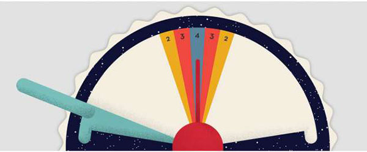

Wavelength is a social guessing game where two teams compete to read each other's minds.
Teams take turns rotating a dial to where they think a target is
located along a spectrum that's
hidden behind a screen.
One player from the active team, "the Psychic", knows where the
target is, but can only give a clue
ON THE SPECTRUM between two opposing concepts. After that, their
team- mates have to guess where the target
is.
Your team's goal:

Turn the red dial as close to the center of the colored target as you can.